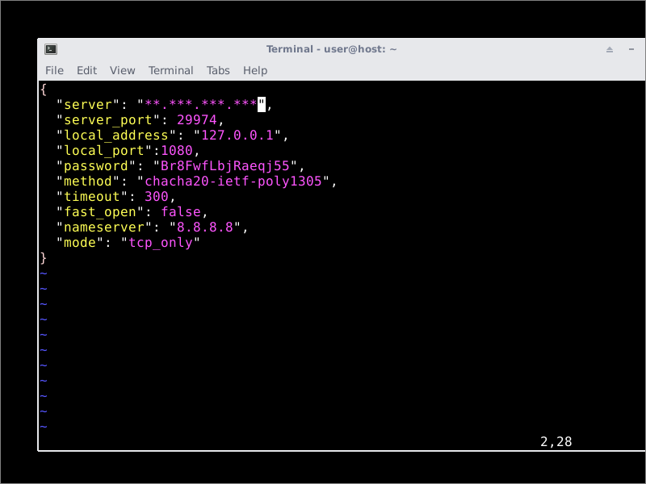
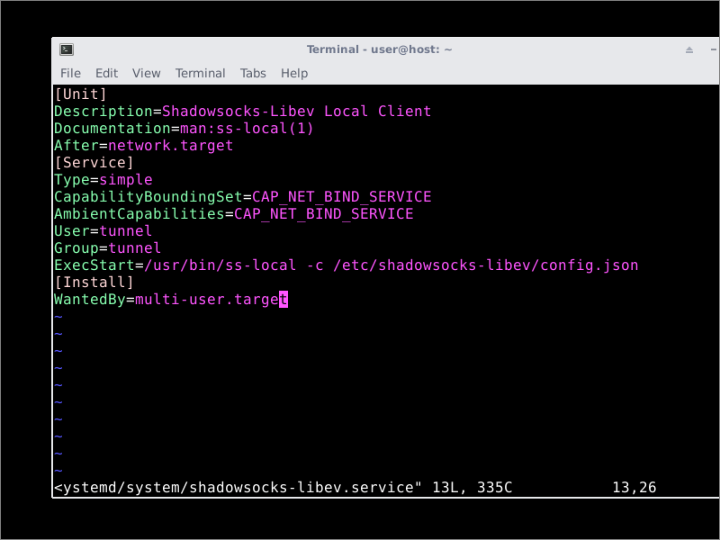
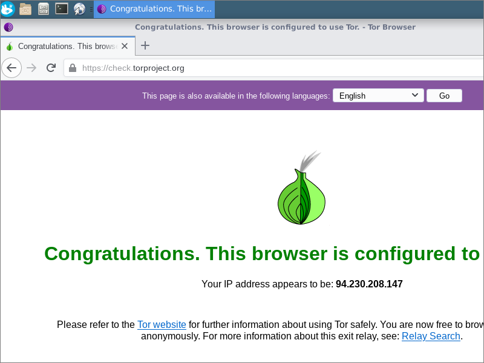

How to Connect to a Proxy Before Tor in Whonix
Connecting to a proxy before Tor helps to evade censorship. It also mitigates the risk of being dependent on Tor alone.
This article provides practical instructions to complement the material on this subject in the Whonix wiki.
To follow along with this tutorial, you need a server you can connect to. This server may be set up by yourself or by a trusted friend. You could alternatively use a free public-interest server. This would have the additional advantage that your traffic would be mixed in with many other people’s.
We do not describe in this article how to set up the server. We cover only the client part of the set-up. If you are interested in setting up a server, please see the other articles on this site.
The general idea is to specify your server in the Whonix Gateway VM as a proxy server, so that your encrypted traffic will pass through your tunnel before it gets to the Tor network.
1. Shadowsocks
1.1. Install Shadowsocks-Libev Client on Gateway
Shadowsocks is the original network tunneling technique designed by clowwindy.
We are going to install the C version of the Shadowsocks client on the Gateway virtual machine. Start the Gateway VM if it is not already running. Open a terminal on the Whonix Gateway, and issue the commands:
sudo apt update
sudo apt install shadowsocks-libev -y
The installation places a default configuration file in /etc/shadowsocks-libev/config.json.
After the install has finished, the shadowsocks-libev service is active and running with the default configuration file.
1.2. Obtain Shadowsocks Server Details
Shadowsocks server configurations are usually distributed as Shadowsocks (“SS”) URLs. These are base-64 encoded strings that begin with the characters
ss://. Here is an example of what an SS URL looks like:
ss://Y2hhY2hhMjAtaWV0Zi1wb2x5MTMwNTpCcjhGd2ZMYmpSYWVxajU1QCoqLioqKi4qKiouKioqOjI5OTc0
The base-64 part of this can be decoded by the base64 --decode command:
echo 'Y2hhY2hhMjAtaWV0Zi1wb2x5MTMwNTpCcjhGd2ZMYmpSYWVxajU1QCoqLioqKi4qKiouKioqOjI5OTc0' | base64 --decode && echo ''
This command yields a result like this:
chacha20-ietf-poly1305:Br8FwfLbjRaeqj55@**.***.***.***:29974
You must pick the parameters out of the result. Continuing this example, this gives you these configuration parameters:
- Server IP address
**.***.***.*** - Server port
29974 - Encryption method
chacha20-ietf-poly1305 - Password
Br8FwfLbjRaeqj55
1.3. Configure Shadowsocks-Libev Client on Gateway
Install the vi editor:
sudo apt install vim -y
Edit the default configuration file, /etc/shadowsocks-libev/config.json.
sudo vi /etc/shadowsocks-libev/config.json
Insert contents as follows, replacing the template parameters with the actual values for your server. Continuing the example given above, this would imply a configuration file like this:
{
"server": "**.***.***.***",
"server_port": 29974,
"local_address": "127.0.0.1",
"local_port":1080,
"password": "Br8FwfLbjRaeqj55",
"method": "chacha20-ietf-poly1305",
"timeout": 300,
"fast_open": false,
"nameserver": "8.8.8.8",
"mode": "tcp_only"
}

The parameters you specify on the client must match up with what you chose on the server.
Save the file /etc/shadowsocks-libev/config.json.
1.4. Configure Systemd Service File on Gateway
Edit the systemd service file /lib/systemd/system/shadowsocks-libev.service.
sudo vi /lib/systemd/system/shadowsocks-libev.service
Make the file look like this:
[Unit] Description=Shadowsocks-Libev Local Client Documentation=man:ss-local(1) After=network.target [Service] Type=simple CapabilityBoundingSet=CAP_NET_BIND_SERVICE AmbientCapabilities=CAP_NET_BIND_SERVICE User=tunnel Group=tunnel ExecStart=/usr/bin/ss-local -c /etc/shadowsocks-libev/config.json [Install] WantedBy=multi-user.target
Save the file /lib/systemd/system/shadowsocks-libev.service.
Reload systemd for your changes:
sudo systemctl daemon-reload
1.5. Start Shadowsocks-Libev Client on Gateway
Restart Shadowsocks-Libev with your new configuration:
sudo systemctl restart shadowsocks-libev
Check that the Shadowsocks-Libev client is running and listening on port 1080:
sudo systemctl status shadowsocks-libev
ss -tulpn | grep 1080
Close the terminal emulator.
1.6. Reconfigure Anon Connection Wizard
Tor on Whonix is controlled by the configuration files stored in the Gateway machine’s directory /usr/local/etc/torrc.d. We can write new
torrc files automatically by reinvoking the Anon Connection Wizard. It is under the System menu group.
- Select Configure.
- Check or do not check the box for bridges, as you prefer.
- Check the box to say you want to use a proxy before connecting to the Tor network.
- Specify the SOCKS5 proxy on
127.0.0.1port1080. - Click Next
- Click Next again
- Wait for the Tor bootstrapping to reach 100%.
- Click Finish.
When the Anon Connection Wizard runs, it writes the new torrc to /usr/local/etc/torrc.d/40_tor_control_panel.conf. Advanced users can add
extra parameters in /usr/local/etc/torrc.d/50_user.conf if they manually restart Tor afterwards.
Minimize the Gateway virtual machine.
1.7. Check Workstation
Go to the Workstation virtual machine. Open the Whonix Tor Browser. Do an end-to-end test of your connectivity by visiting https://check.torproject.org.
2. Troubleshooting
If you experience any difficulties operating Whonix, visit the Whonix forums.
For Shadowsocks, you can ask questions on social media, or file legitimate issues on the appropriate GitHub issues page:
Updated 2021-06-19